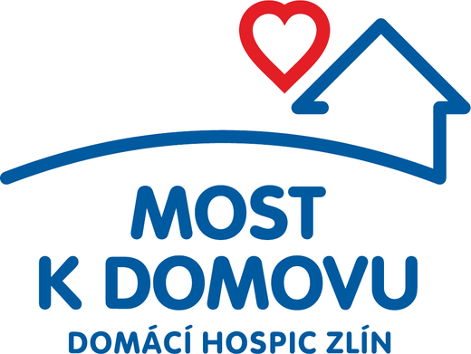
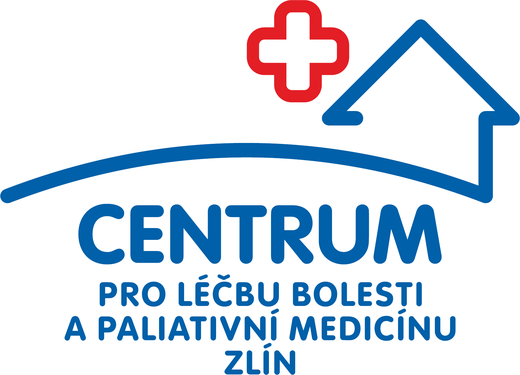
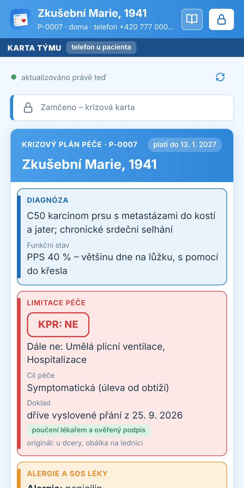
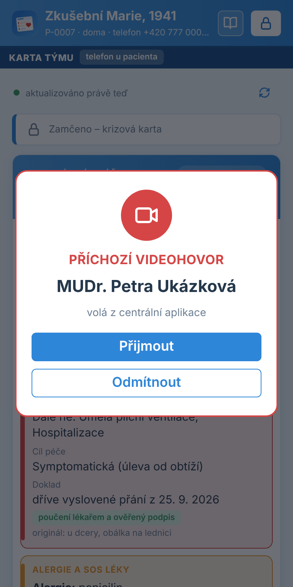

Rozhodnutí o cíli péče z nemocnice, hospice nebo ordinace praktika jde s pacientem dál: do domova pro seniory, k praktickému lékaři i k záchranné službě. Krizová karta v telefonu u lůžka bez přihlašování, deník pečujících, plán péče ve verzích podepsaných lékařem.


Karta pacienta je krizový plán péče pro pacienty. Lékař garanta – nemocniční paliativní tým, mobilní hospic, paliativní ambulance nebo praktický lékař – zavede pacienta v centrální aplikaci a nahraje průkaz do jednoduchého telefonu, který leží u lůžka: cíl péče, limitace a čím jsou doloženy, kdo za pacienta rozhoduje, SOS léky, obvyklý funkční stav, kontakty. Sestry domova, hospic, praktik a rodina z něj čerpají a připisují do něj. Záchranáři vidí krizovou kartu bez přihlašování. Vznikla ve spolupráci Centra pro léčbu bolesti a paliativní medicínu Zlín a mobilního hospice Most k domovu; běží v jejich provozu spolu s portálem PéčeDoma, pilot se ZZS Zlínského kraje a domovy pro seniory ve Zlíně se připravuje.
Průkaz má tři podoby na jedné adrese: centrální aplikace v prohlížeči (na počítači i mobilu, a také uvnitř portálu PéčeDoma), karta týmu na zapůjčeném telefonu u lůžka (Android aplikace v kiosk režimu, nic jiného na něm neběží) a Můj průkaz ve vlastním telefonu pacienta a rodiny (na Google Play jako Karta pacienta pro domácnost). Z centrály jde na kterýkoli telefon pacienta zavolat videohovorem. S portálem PéčeDoma / PéčeDoma Plus sdílí klienty, léky, zprávy i návštěvy, takže tým nic nepřepisuje. Data má provozovatel ve vlastní databázi (MS SQL, stejná platforma jako PéčeDoma Plus, organizace oddělené na úrovni databáze). Nahrazuje papírové formuláře pro ZZS, noční telefonáty „co s ním“ a rozhodování naslepo.
Kupujícím je organizace, která provozuje síť karet: typicky praktický lékař, mobilní hospic nebo paliativní ambulance pro svůj region, nemocnice s paliativním týmem, případně kraj či nadace. Pracoviště v týmu kolem pacienta (domovy, praktici, ZZS) licenci neplatí – zapojuje je garant, a právě to usnadňuje rozšíření v regionu.
| Segment | Odhad v ČR | Co je tlačí | Kdo rozhoduje |
|---|---|---|---|
| Mobilní hospice a paliativní ambulance (garant) | cca 40–50 hospiců, 30–60 ambulancí | Pacienti v domovech a doma bez dostupného plánu; noční výjezdy ZZS a hospitalizace proti přání; revize plánů bez připomínky | ředitel/ka, vedoucí lékař, vrchní sestra |
| Nemocniční paliativní týmy | desítky nemocnic (program MZ ČR) | Rozhodnutí o cílech péče končí propuštěním; chybí předání do terénu | vedoucí lékař paliativního týmu, náměstek pro léčebnou péči |
| Kraje, krajské ZZS a nadace (provozovatel sítě pro region) | 14 krajů | Zbytečné výjezdy a resuscitace, chybí sdílený krizový souhrn; dotační programy na paliativní péči | odbor zdravotnictví kraje, ředitel ZZS, správní rada nadace |
| Domovy pro seniory a domovy se zvláštním režimem (člen týmu, neplatí) | stovky zařízení | Sestra v noci neví, komu volat a co je u klienta „normální“; tlak rodin | ředitel domova, vrchní sestra – zapojí je garant |
| Praktičtí lékaři (garant svých pacientů doma i v domovech) | cca 5 000 ordinací; cílově ti, kdo ošetřují domov pro seniory nebo mají paliativní pacienty doma | Bez hospice v dosahu nesou rozhodnutí sám; v noci a o víkendu o něm ZZS ani sestra domova neví; podklad pro vlastní zápis | lékař – majitel ordinace; skupiny praktiků a sdružení (SPL ČR) jako cesta k více ordinacím |
Praktický lékař jako garant trh výrazně rozšiřuje: nepotřebuje hospic ani nemocnici, průkaz založí sám svým pacientům v domovech i doma a stačí mu nejmenší varianta. Nejlepší cíl je praktik, který ošetřuje celý domov pro seniory – jeden prodej pokryje desítky klientů a sestry domova se zapojí hned. Když se později přidá hospic nebo nemocnice, garanci si předají v téže kartě.
Nejsnazší první prodej je mobilní hospic, který už používá PéčeDoma Plus nebo zná Centrum LB: Karta pacienta běží na stejné databázi, hospic je garantem a domovy i praktiky v regionu zapojí sám. Argument pro ekonomického rozhodovatele: každý odvrácený zbytečný výjezd ZZS a hospitalizace proti plánu péče je úspora pro systém a pro kraj měřitelný ukazatel – pilot přesně tohle měří.
Čtyři aplikace na jedné adrese: správa organizací pro provozovatele, centrální aplikace pro garanta a tým, karta týmu na zapůjčeném telefonu u lůžka a Můj průkaz ve vlastním telefonu pacienta. Role v centrále: správce, lékař, sestra, čtenář. Na telefonu čtyři úrovně: bez přihlášení (ZZS, kdokoli u pacienta), rodina s PINem od garanta, tým s osobním PINem, lékař s kódem dne.
| Oblast | Co umí |
|---|---|
| Založení organizace | Jeden formulář: IČO (název a adresa z ARES), první pracoviště, telefon 24/7, název sítě a správce; první heslo se ukáže jednou spolu s textem k odeslání. Organizaci, která už má PéčeDoma Plus, se karta jen zapne |
| Přehled pacientů | Seznam s barevnými upozorněními (čeká revize, zhoršení, telefon bez spojení, slabá baterie, předání garance bez potvrzení přes 72 h, nemocnice garantem přes 30 dní), kde je pacient (doma, domov seniorů, hospitalizace) podle PéčeDoma, fulltextové hledání, číslo telefonu s kartou s voláním klepnutím, export do CSV/JSON |
| Založení pacienta | Z PéčeDoma (jeden klient nebo hromadně), z propouštěcí zprávy (fotka se přečte v prohlížeči a anonymně rozebere AI: diagnózy, alergie, léky, SOS léky, cíl péče, limitace, kontakty, co chybí; lékař potvrdí), ručně, nebo více pacientů ze souboru CSV/JSON; průkaz jde založit i přímo z portálu PéčeDoma |
| Krizová karta | Diagnóza a funkční stav jako první oddíl, cíl péče, limitace s dokladem, SOS léky a opioidy, alergie, koho volat (u lékaře plánu vždy číslo 24/7 organizace), kdo rozhoduje, nejbližší návštěva z PéčeDoma; bez přihlášení pro ZZS včetně předchozích výjezdů, posádka zapíše výjezd; tisk záložní karty |
| Plán péče | Cíl péče (symptomatická, omezená, plná léčba), limitace (KPR, umělá plicní ventilace, hospitalizace, antibiotika i.v., infuze, sonda, dialýza, transfuze), doklad k limitacím (dříve vyslovené přání s poučením a ověřeným podpisem, nebo sepsáno při přijetí u poskytovatele – karta pro ZZS to rozliší), platnost a revize (výchozí 3 měsíce); každá změna je nová verze s podpisem lékaře, historie verzí; lékař ho zapíše i z PéčeDoma |
| Léky | Jedna agenda pro centrálu, telefon i Můj průkaz: SOS léky, opioidy, pravidelná medikace, parenterálně. U pacienta propojeného s PéčeDoma jsou léky přímo z portálu a lékař je mění i z telefonu u lůžka; změny jdou zpět do PéčeDoma s historií |
| Interní poznámky a zhoršení | Deník týmu jen pro doplňování (změna stavu, podaný SOS lék, návštěva, telefonát); průvodce Zhoršení (co pozoruji, co jsem udělal, komu volám) se ukáže na kartě i v centrále, po zlepšení Stav stabilizován; rodina interní poznámky nevidí |
| Důležité kontakty | Rozhoduje / informovat / pečuje; výchozí kontakty organizace (linka paliativní podpory, sloužící sestra, ambulance) se u klienta jen zatrhnou a změna se propíše všem |
| Lidé a týmy | Každé pracoviště (garant i domov či praktik) zapíše své lidi jednou – ručně, z CSV nebo z PéčeDoma – a rozdělí je do týmů; každý má osobní PIN platný u všech svých pacientů (tisk kartiček, SMS); tým „přiřadit vždy“ se k pacientům garanta přidává sám; role lékař a specializovaná sestra, praktik, hospic, sestra domova |
| Tým a garance | Pracoviště v týmu (nemocnice, hospic, ambulance, praktik, domov, ZZS) s rolí a platností; předání garance potvrzuje přijímající lékař, upozornění po 72 h, nemocnice nejdéle 30 dní; historie garance; při přesunu pacienta se mění tým, telefon zůstává |
| Telefon u pacienta (karta týmu) | Kartu lze nahrát jen do telefonu s číslem uvedeným u pacienta – odkazem z SMS nebo QR kódem; šifrovaná offline kopie, fronta zápisů bez signálu, synchronizace při každém připojení; více pacientů v jednom telefonu (např. oddělení domova); stav baterie a poslední spojení v centrále, zablokování a vzdálené vymazání; štítky na telefony k tisku |
| Přístupy na telefonu | Záchranná služba bez PINu; rodina PINem od garanta; tým osobním PINem; lékař bez PINu kódem dne z centrály nebo z PéčeDoma (platí celý den, ověří se i bez signálu); zamknutí po 2 minutách; co kdo vidí a zapisuje, hlídá i server |
| Videohovor | Z centrály (i z mobilu) tlačítko Videohovor na telefon: zazvoní všechny telefony pacienta – karta u lůžka i Můj průkaz – i zamčené a se zhasnutým displejem, kdokoli u lůžka přijme bez PINu. Z telefonu tým nebo rodina klepne na Videohovor, kolegovi pošle SMS s výzvou a spustí videokonferenci; lékař hovor vidí v centrále v každé agendě a připojí se. Vlastní server videohovorů (Jitsi Meet) u provozovatele, hovory se nenahrávají, do deníku jde jen zahájení a délka |
| Android aplikace pro zapůjčený telefon | Kiosk: na obrazovce je jen karta a nejde z ní odejít, volání jen na čísla z karty, SMS kolegovi k videohovoru, hovor z centrály probudí zhasnutý displej; zavedení telefonu QR kódem nebo kabelem (postup pro Mac i Windows); servisní PIN pro Wi-Fi, obnovení a vrácení telefonu |
| Můj průkaz (vlastní telefon pacienta) | Na Google Play jako Karta pacienta pro domácnost: plán péče, doklad, léky a kontakty od lékaře jen ke čtení; vlastní přání a hodnoty, poznámky a otázky pro lékaře, záznam podání léků (Podán / Nepodán), zprávy s týmem, videohovor od lékaře, nouzový text do Zdravotního ID, tisk a sdílení s náhledem; přání a záznamy jdou týmu automaticky; až 6 telefonů pacienta a rodiny; data šifrovaná PINem pacienta |
| Propojení s PéčeDoma / PéčeDoma Plus | Založení průkazu a zápis plánu péče přímo z Dat klienta v portálu (karta uvnitř PéčeDoma), léky obousměrně, jedno vlákno zpráv s pacientem a rodinou, nejbližší návštěva z kalendáře, kde se pacient nachází, registrace telefonu k Lince paliativní podpory, kód lékaře; stejná databáze a stejné organizace |
| Dokumenty, výpis, uzavření | Kopie dříve vysloveného přání a zpráv s datem a pracovištěm původu, výpis do zdravotnické dokumentace, uzavření průkazu (telefon se vymaže a vrací do oběhu) |
| Bezpečnost a audit | Organizace oddělené na úrovni databáze (Row-Level Security), přístup jen pro pracoviště v týmu, neměnný log přístupů, log dotazů na AI bez obsahu, žádné SQL z prohlížeče; deník, verze plánu a historie garance nejdou mazat |
| Nápověda a vzhled | Nápověda s obrázky přímo v aplikaci (20 kapitol, na telefonu i offline), chat nad nápovědou přes anonymizační bránu, 10 barevných schémat včetně tmavého, centrála použitelná na mobilu |
Karta pacienta patří do stejné rodiny jako PéčeDoma Plus (portál pro domácí a hospicovou péči) a Ordinace (komunikace s pacienty ambulance); běží na stejné databázi a stejných organizacích. Vedle toho existuje prototyp Průkaz pro plán péče podle zadání MUDr. Kabelky (Dialogus): pacientem řízená karta bez serveru, vše jen v telefonu pacienta – zatím k diskusi, není součástí ostré sítě.
Doporučený model je jednorázové zavedení plus měsíční licence podle počtu aktivních průkazů (pacientů s kartou) – od jedné ordinace praktika po krajskou síť. Pracoviště v týmu kolem pacienta – domovy, praktici, ZZS, nemocnice jako host – licenci neplatí. Částky jsou návrh k diskusi bez DPH.
| Varianta | Pro koho | Zavedení (jednorázově) | Licence měsíčně | Co je v ceně |
|---|---|---|---|---|
| Ordinace | praktický lékař jako garant, do 5 aktivních průkazů | 5 000 Kč | 790 Kč | centrální aplikace, karta týmu na telefonu u lůžka, Můj průkaz pro pacienta a rodinu, PINy a kód dne, výpis, nápověda s chatem, provoz a zálohy, aktualizace |
| Start | jeden poskytovatel (hospic, ambulance, praktik s celým domovem), do 15 aktivních průkazů | 15 000 Kč | 1 900 Kč | vše z Ordinace + AI rozbor propouštěcí zprávy, lidé a týmy s osobními PINy, videohovor na sdíleném serveru provozovatele, štítky na telefony |
| Síť | provozovatel sítě pro okres nebo region, do 50 průkazů, více pracovišť a garantů | 35 000 Kč | 4 900 Kč | vše ze Start + předávání garance mezi poskytovateli, Android kiosk aplikace a zavedení telefonů QR kódem, více pacientů v jednom telefonu, správa telefonů, přehled provozovatele |
| Kraj | kraj, krajská ZZS nebo nadace, do 200 průkazů, více organizací v jedné instalaci | 70 000 Kč | 9 900 Kč | vše ze Síť + vlastní organizace pro jednotlivé poskytovatele, přednostní podpora, podklady pro vyhodnocení (výjezdy ZZS, hospitalizace) |
| Volitelně | Cena |
|---|---|
| Zapůjčený telefon se SIM (Android v kiosk režimu, pouzdro, tištěná záložní karta) | cca 2 500–5 000 Kč za kus jednorázově + SIM cca 150 Kč měsíčně (20 telefonů pro pilot ≈ 100 000 Kč) |
| Příprava telefonu (kiosk, spárování, štítek, evidence) | 500 Kč za kus |
| Propojení s PéčeDoma / PéčeDoma Plus (založení z portálu, léky, zprávy, návštěvy, karta uvnitř portálu) | pro zákazníky PéčeDoma v ceně; napojení na jiný systém podle rozsahu 15 000–40 000 Kč |
| Vlastní server videohovorů u zákazníka (Jitsi Meet) místo sdíleného | 8 000 Kč jednorázově + 500 Kč měsíčně; pro variantu Ordinace videohovor jako doplněk 300 Kč měsíčně |
| Provoz AI (anonymní rozbor propouštěcí zprávy, chat nápovědy) | skutečné náklady, odhad 100–500 Kč měsíčně |
| SMS (odkazy k párování, PINy, upozornění – bez zdravotních údajů) | podle skutečného počtu, cca 1 Kč za SMS |
| Vlastní server u zákazníka místo sdíleného provozu | +30 % k zavedení |
| Školení na místě (půl dne: garanti, sestry domovů, ZZS) | 6 000 Kč + cestovné |
| Pilotní provoz 3 měsíce | zdarma licence, platí se jen zavedení; při pokračování sleva 20 % na první rok |
| Zákazník PéčeDoma Plus (varianta Tým nebo Organizace) | zavedení Start zdarma, licence se slevou 50 % |
Roční platba předem = 2 měsíce zdarma. Pro nadace a neziskové hospice se vyplatí nabídnout variantu Síť za cenu Start v prvním roce; telefony lze financovat z dotačních programů (vzor: žádost Nadace Most k domovu Zlín do programu ČSOB pomáhá regionům). Reference z hospicové komunity se šíří rychle.
Od zákazníka potřebujeme IČO organizace, seznam pracovišť a uživatelů s rolemi (lékař, sestra, správce), kontakt na ZZS a domovy v regionu, logo a text informace pro pacienta, případně přístup pro napojení na PéčeDoma Plus.